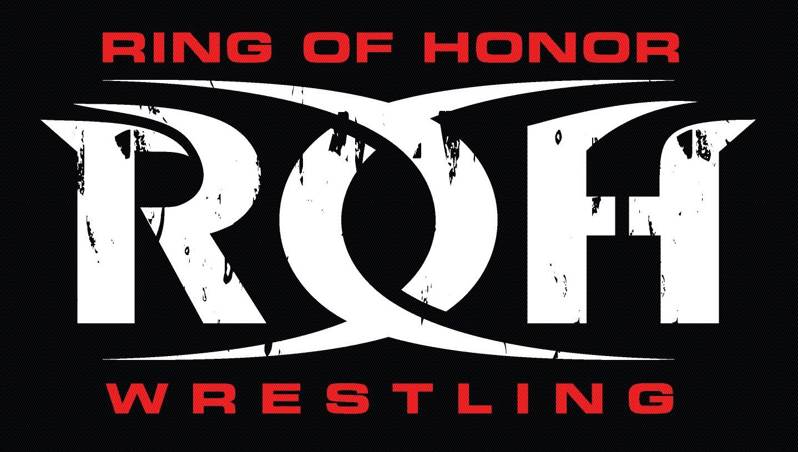
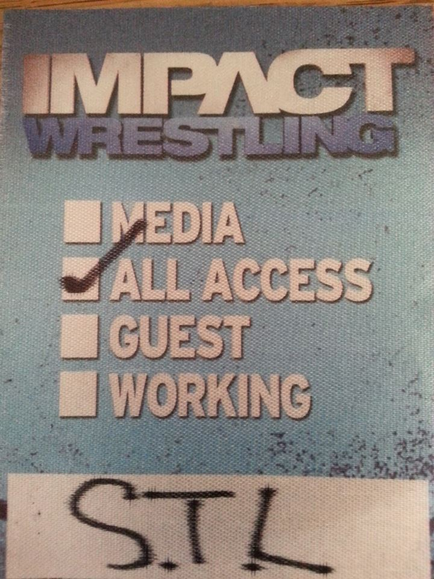

Starting Out
When I was I started attending local independent wrestling shows. I wanted to be involved in the business so I started talking to wrestlers at the shows. I made a few that would help me start training to be a pro wrestler. After training for a month I realized I didn't want to be a wrestler but I still wanted to be part of the business.
Ring Crew of Honor
After deciding to no longer train to be a wrestler, I stayed being in the ring crew. There are 3 big wrestling companies in America. ©Ring of Honor was my favorite. Every couple of months they would run a show in Chicago. One day I got to the Chicago venue early to see if I could help set up. They let me set up for them and after a few shows they started showing me how to set up and work the lights for the stage. I was able to work for (at the time) 3rd largest company in America. I was pretty happy.
IMPACT! Wrestling Ring Crew
One day the 2nd largest company was running a show in St. Louis. Through the contacts I had made at Ring of Honor, I was able to go work for them for the day. I was able to eat with Hulk Hogan, Sting, and some other big stars (even though they were at a different table we still had lunch and dinner at the same time in the same room, tables apart). That was one of the coolest experiences from a wrestling stand point.